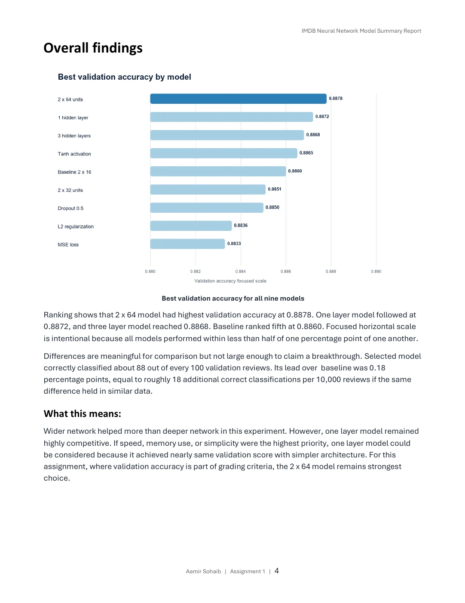

Establish a baseline
Two hidden layers with 16 ReLU units each, a sigmoid output, binary crossentropy loss, and RMSprop optimization.
Nine controlled neural-network experiments classifying IMDB movie reviews as positive or negative. A study of architecture, training choices, and the limits of incremental improvement.
The selected two-layer, 64-unit ReLU model recorded 88.78% validation accuracy and 88.16% test accuracy. The improvement over the baseline was modest.
I prepared multi-hot inputs in R, defined nine model configurations, compared their recorded results, and assessed overfitting and validation-based model selection.

The Keras IMDB dataset contains 50,000 labeled reviews. The experiment uses 15,000 for model training, 10,000 for validation, and a separate 25,000-review test set. Reviews are represented as 10,000-position multi-hot vectors; word order is not preserved.
Two hidden layers with 16 ReLU units each, a sigmoid output, binary crossentropy loss, and RMSprop optimization.
Compare one, two, and three layers; 16, 32, and 64 units; ReLU versus tanh; binary crossentropy versus MSE; dropout and L2 regularization.
Use the same observations, seed, batch size of 512, and maximum of 20 epochs. Early stopping restores the best validation-accuracy weights.
| Configuration | Validation accuracy | Test accuracy |
|---|---|---|
| Baseline: 2 × 16 ReLU | 88.60% | 88.06% |
| Selected: 2 × 64 ReLU | 88.78% | 88.16% |
The wider model ranked first on validation accuracy, while a single hidden layer performed almost as well. Added depth was not automatically superior.
The selected model improved validation accuracy by 0.18 percentage points and test accuracy by 0.10 percentage points over the baseline.
The tested dropout and L2 settings did not improve validation accuracy. That finding applies to these tested settings and does not show that regularization is ineffective in general.